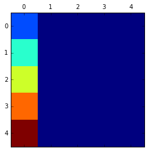
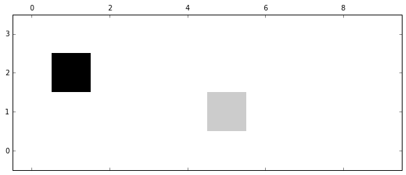
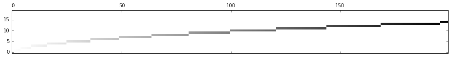
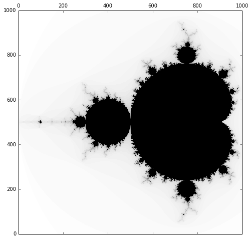
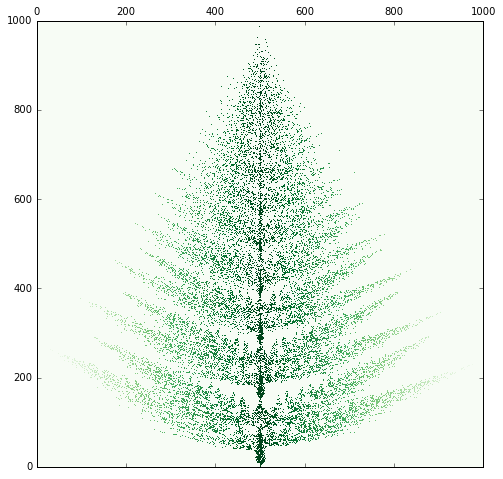

Języki skryptowe - Python
Wykład 11
- programowania obiektowego ciąg dalszy
Na ostatnim wykładzie
- klasy pozwalają na definiowanie własnych typów
- funkcje specjalne - definiowanie działania operatorów lub wywołań funkcji wbudowanych (print, len...)
- nie ma "pełnej prywatności"
- atrybuty klasowe
Konwencja self
- pierwszym argumentem każdej metody jest wskaźnik na obiekt
- przyjęto nazywać ten argument self (choć nic nie stoi na przeszkodzie, żeby używać innej nazwy)
self test
class Foo:
def moja_metoda(): # błąd
pass
x = Foo()
x.moja_metoda()
# bo x jest pierwszym argumentem pozycyjnym!
---------------------------------------------------------------------------
TypeError Traceback (most recent call last)
<ipython-input-2-d5d408a69202> in <module>()
1 x = Foo()
----> 2 x.moja_metoda()
3 # bo x jest pierwszym argumentem pozycyjnym!
TypeError: moja_metoda() takes 0 positional arguments but 1 was given
Funkcja globalna
class Foo:
def __init__(self): # "konstruktor"
self.bar = False
def __str__(self): # print
return "Foobar = {}".format(self.bar)
def funkcja(obiekt): # funkcja globalna
obiekt.bar = True # ustaw flagę bar
x = Foo() # stwórz obiekt typu Foo
print(x)
funkcja(x) # globalna na x
print(x)
Foobar = False
Foobar = True
Metoda z funkcji globalnej
class Foo:
def __init__(self): # "konstruktor"
self.bar = False
def __str__(self): # print
return "Foobar = {}".format(self.bar)
def funkcja(obiekt): # metoda
obiekt.bar = True # ustaw flagę bar
x = Foo() # stwórz obiekt typu Foo
print(x)
x.funkcja() # metoda (x jest arg pozycyjnym)
print(x)
Foobar = False
Foobar = True
Punkt
class Punkt:
def __init__(self, x=0.0, y=0.0):
self.x = x # odcięta
self.y = y # rzędna
def __str__(self): # (x, y)
return "({}, {})".format(self.x, self.y)
x = Punkt(1.0, 2.0)
print(x)
(1.0, 2.0)
Odcinek
from math import sqrt
class Odcinek:
def __init__(self, start, end):
self.poczatek = start # Punkt
self.koniec = end # Punkt
def dlugosc(self):
# Odcinek.Punkt.Wspolrzedna
x = self.koniec.x - self.poczatek.x
y = self.koniec.y - self.poczatek.y
return sqrt(x**2 + y**2)
a = Punkt() # (0, 0)
b = Punkt(2) # (2, 0)
o = Odcinek(a, b)
o.dlugosc()
2.0
Enkapsulacja
- enkapsulacja - ukrywanie implementacji
- brak bezpośredniego dostępu do danych
- tylko własne metody moga zmienić stan
- w Pythonie jest to umowne, bo nie ma zmiennych prywatnych
Przykład - cząstka
class Particle:
def __init__(self, mass, velocity=0.0):
self.m = mass # masa
self.v = velocity # prędkość
self.ped() # ustala pęd
def __str__(self):
return "m = {m}, v = {v}, p = {p}"\
.format(m=self.m, v=self.v, p=self.p)
def ped(self): # liczy pęd cząstki
self.p = self.m*self.v
Cząstka - test
x = Particle(10, 10) # masa = 10, prędkość = 10
print(x) # pęd = masa * prędkość
m = 10, v = 10, p = 100
x.v = 0 # zmień prędkość
print(x) # pęd nie został uaktulaniony
m = 10, v = 0, p = 100
Gettery i settery
class Particle:
def __init__(self, mass, velocity=0.0):
self.__m = mass # masa
self.__v = velocity # prędkość
self.ped() # ustala pęd
def __str__(self):
return "m = {m}, v = {v}, p = {p}"\
.format(m=self.__m, v=self.__v, p=self.__p)
def ped(self): # liczy pęd cząstki
self.__p = self.__m*self.__v
def get_v(self): # pobierz prędkośc
return self.__v
def set_v(self, v): # ustaw prędkość
self.__v = v
self.ped() # aktualizuj pęd
get, set - test
x = Particle(10, 10) # masa = 10, prędkość = 10
print(x)
m = 10, v = 10, p = 100
x.set_v(0) # zmień prędkość
print(x) # pęd został uaktulaniony
m = 10, v = 0, p = 0
x.get_v() # pobierz prędkość
0
Dziedziczenie
- umożliwia ponowne wykorzystanie funkcjonalności klas bazowych w klasach pochodnych
- przykład:
- klasa pojazd: jedz, hamuj...
- klasa samochód: to co pojazd + otwórz bagażnik...
- klasa motor: to co pojazd + jedz na jednym kole...
Przykład
class Baza:
def whoami(self):
print("Jestem obiektem klasy Baza.")
class Pochodna(Baza): # dziedziczy z Baza
def sayhi(self):
print("Hello!")
x = Pochodna()
x.sayhi() # zdefiniowane w Pochodna
Hello!
x.whoami() # zdefiinowane w Baza
Jestem obiektem klasy Baza.
Konstruktor klasy bazowej
class Foo:
def __init__(self):
print("Tworzę Foo")
class Bar(Foo):
def __init__(self):
print("Tworzę Bar")
x = Bar() # __init__ z Foo nie jest wywołany
Tworzę Bar
Wywołanie konstruktora bazy
class Foo:
def __init__(self):
print("Tworzę Foo")
class Bar(Foo):
def __init__(self):
super().__init__() # wywołaj konstruktor klasy nadrzędnej
print("Tworzę Bar")
x = Bar()
Tworzę Foo
Tworzę Bar
Przykład - Student
class Student:
last_index = 1234 # atrybut klasy
def __init__(self, name):
# aktualizuj numer indeksu
self.__class__.last_index += 1
# przypisz studentowi imię i numer indeksu
self.name = name
self.index = self.__class__.last_index
def __str__(self): # Student [imię] (nr indeksu)
return "Student {} (nr {})".format(self.name, self.index)
student = Student("Anna")
print(student)
Student Anna (nr 1235)
Przykład - StudentISSP
class StudentISSP(Student): # też Student
def __init__(self, name, przedmioty):
super().__init__(name) # wywołaj Student.__init__
self.przedmioty = przedmioty
def __str__(self):
return super().__str__() + \
": " + ", ".join(self.przedmioty)
studentISSP = StudentISSP("Jan", ["programowanie", "fizyka"])
print(studentISSP)
Student Jan (nr 1236): programowanie, fizyka
Polimorfizm
- współdzielenie interfejsu przez różne typy
class Kot:
def glos(self):
print("Miau")
class Pies:
def glos(self):
print("Hau")
class Krowa:
def glos(self):
print("Muu")
for zwierze in [Kot(), Pies(), Krowa()]:
zwierze.glos() # za każdym razem inny typ
Miau
Hau
Muu
Ryby głosu nie mają
class Ryba:
pass # brak definicji glos
for zwierze in [Kot(), Pies(), Krowa(), Ryba()]:
zwierze.glos() # Ryba nie ma zdefiniowanej metody glos
Miau
Hau
Muu
---------------------------------------------------------------------------
AttributeError Traceback (most recent call last)
<ipython-input-32-6d74614a5413> in <module>()
1 for zwierze in [Kot(), Pies(), Krowa(), Ryba()]:
----> 2 zwierze.glos() # Ryba nie ma zdefiniowanej metody glos
AttributeError: 'Ryba' object has no attribute 'glos'
Wymuszanie interfejsu
class Zwierze:
def glos(self):
pass
class Kot(Zwierze):
def glos(self): # nadpisuje Zwierze.glos
print("Miau")
class Ryba(Zwierze):
pass
for zwierze in [Kot(), Ryba()]:
zwierze.glos() # Ryba siedzi cicho
Miau
Większe wymuszanie interfejsu
class Zwierze:
def glos(self):
raise NotImplementedError("Każde zwiesze musi mieć głos.")
class Kot(Zwierze):
def glos(self): # nadpisuje Zwierze.glos
print("Miau")
class Ryba(Zwierze):
pass
for zwierze in [Kot(), Ryba()]:
zwierze.glos() # Ryba zwróci błąd
Miau
---------------------------------------------------------------------------
NotImplementedError Traceback (most recent call last)
<ipython-input-36-8b317967163a> in <module>()
1 for zwierze in [Kot(), Ryba()]:
----> 2 zwierze.glos() # Ryba zwróci błąd
<ipython-input-35-e744aa713040> in glos(self)
1 class Zwierze:
2 def glos(self):
----> 3 raise NotImplementedError("Każde zwiesze musi mieć głos.")
4
5 class Kot(Zwierze):
NotImplementedError: Każde zwiesze musi mieć głos.
Przykład - Wielokąt
class Wielokat:
def __init__(self, *boki):
self.boki = boki # krotka
def obwod(self): # suma długości
return sum(self.boki) # boków
def pole(self): raise NotImplementedError
w = Wielokat(1, 2, 3, 4, 5) # pięciokąt
w.obwod()
15
Przykład - Trójkąt
class Trojkat(Wielokat):
def __init__(self, *boki):
super().__init__(*boki) # utwórz wielokąt
def pole(self):
pole = p = self.obwod()/2 # obwod zdefiniowane w Wielokat
for bok in self.boki: # wzór Herona
pole *= (p - bok) # p(p - a)(p - b)(p - c)
return pole**0.5 # pierwiastek
t = Trojkat(3, 4, 5)
t.obwod() # z Wielokat
12
t.pole() # z Pole
6.0
Przykład - Trójkąt Równoboczny
class TrojkatR(Trojkat):
def __init__(self, bok):
super().__init__(bok, bok, bok) # Trójkąt -> Wielokąt
def pole(self):
return (self.boki[0]**2)*(3**0.5)/4
t = TrojkatR(3) # (3, 3, 3)
t.pole() # TrojkatR.pole()
3.8971143170299736
t = Trojkat(3, 3, 3)
t.pole() # Trojkat.pole()
3.897114317029974
Wielokrotne dziedziczenie
- klasa może posiadać kilka klas bazowych
- posiada wtedy wszystkie dane i metody
- a co jeśli się powtarzają?
Przykład - amifibia
class Samochod:
def jedz(self):
print("Jadę...")
class Lodz:
def plyn(self):
print("Płynę...")
class Amfibia(Samochod, Lodz): pass
amfibia = Amfibia()
amfibia.jedz() # Samochod
amfibia.plyn() # Lodz
Jadę...
Płynę...
Przykład - amifibia v2
class Samochod:
def run(self):
print("Jadę...")
class Lodz:
def run(self):
print("Płynę...")
class Amfibia1(Samochod, Lodz): pass
class Amfibia2(Lodz, Samochod): pass
amifibia1 = Amfibia1()
amifibia1.run()
Jadę...
amifibia2 = Amfibia2()
amifibia2.run()
Płynę...
Klasa Screen
- napiszemy klasę, która będzie naszym wirtualnym ekranem
- do rysowania użyjemy modułu matplotlib
%matplotlib inline
import matplotlib.pyplot as plt
matshow
tablica = [[0]*5 for _ in range(5)] # tablica 5x5
for i in range(5):
tablica[i][0] = i + 1 # pierwsza kolumna
print(tablica)
plt.matshow(tablica) # "rysuj" tablicę
[[1, 0, 0, 0, 0], [2, 0, 0, 0, 0], [3, 0, 0, 0, 0], [4, 0, 0, 0, 0], [5, 0, 0, 0, 0]]
<matplotlib.image.AxesImage at 0x7f2c74549978>

Screen
class Screen:
"""Ekran na bazie matplotlib.pyplot.matshow"""
def __init__(self, width, height): # ustal wymiary ekrany
self.w = width # zapamiętaj szerokość
self.h = height # zapamiętaj wysokość
self.pixels = [[0]*width for _ in range(height)]
def show(self, cmap=plt.cm.gray_r):
plt.matshow(self.pixels, origin='lower', cmap=cmap)
def set(self, y, x, value): # ustaw wartość piksela
if y < self.w and x < self.h: # x <-> y
self.pixels[x][y] = value # dla naszej wygody
Screen test
s = Screen(10, 4)
s.set(5, 1, 10) # [5,1] = 10
s.set(1, 2, 50) # [1,2] = 50
s.show()

Screen test II
s = Screen(200, 20)
for x in range(200):
s.set(x, int(x**0.5), x)
s.show()

Zbiór Mandelbrota
- punkty \(p\) (zespolone), dla których ciąg
(gdzie \(z_0 = 0\)) nie dąży do nieskończoności lub
\[|z_n| < 2\]Implementacja
def mandelbrot(p, limit=100):
"""Zwraca n, dla którego |zn| < 2"""
zn = p # bo z0 = 0
for i in range(limit): # sprawdzamy do pewnego momentu
if abs(zn) > 2: # zwróć miejsce, w którym
return i # warunek nie jest już spełniony
zn = zn**2 + p # następny wyraz ciągu
return limit # warunek spełniony do limitu
Przygotowanie zbioru
size = 1000
s = Screen(size, size)
# podwójna pętla po wszystkich pikselach
for x in range(size):
for y in range(size):
xs = -2.0 + 2.5 * x / size # [-2.0, 0.5]
ys = -1.25 + 2.5 * y / size # [-1.25, 1.25]
s.set(x, y, mandelbrot(complex(xs, ys)))
Najsłynniejszy fraktal
import matplotlib
matplotlib.rcParams['figure.figsize'] = (10, 8)
s.show()

IFS (iterated function system)
- geometria fraktalna
- przykład - paproć Barnsleya:
- w proporcjach 85:7:71
Paproć Barnsleya

IFS - przykład
# źródło: https://scratch.mit.edu/projects/92421819/
def f1(x, y): return 0.03*x, 0.1*y
def f2(x, y): return 0.85*x, 0.85*y + 1.5
def f3(x, y): return 0.8*x, 0.8*y + 1.5
def f4(x, y): return 0.2*x - 0.08*y, 0.15*x + 0.22*y + 0.85
def f5(x, y): return -0.2*x + 0.08*y, 0.15*x + 0.22*y + 0.85
def f6(x, y): return 0.25*x-0.1*y, 0.12*x + 0.25*y + 0.3
def f7(x, y): return -0.2*x + 0.1*y, 0.12*x + 0.2*y + 0.4
Losowanie
from random import randint
def random_f():
# proporcje 2:60:10:7:7:7:7
x = randint(1,100)
if x <= 2: return f1
if x <= 62: return f2
if x <= 72: return f3
if x <= 79: return f4
if x <= 86: return f5
if x <= 93: return f6
return f7
Przygotowanie danych
n_iter = 100000
size = 1000
s = Screen(size, size)
x, y = 0, 0 # punkt początkowy
for _ in range(n_iter):
f = random_f() # losowa funkcja
x, y = f(x, y) # nowe współrzędne
xs = (x + 1.0) * size / 2
ys = y * size / 10.0
s.set(int(xs), int(ys), 500 - abs(xs - 500))
Wesołych Świąt
s.show(plt.cm.Greens)
